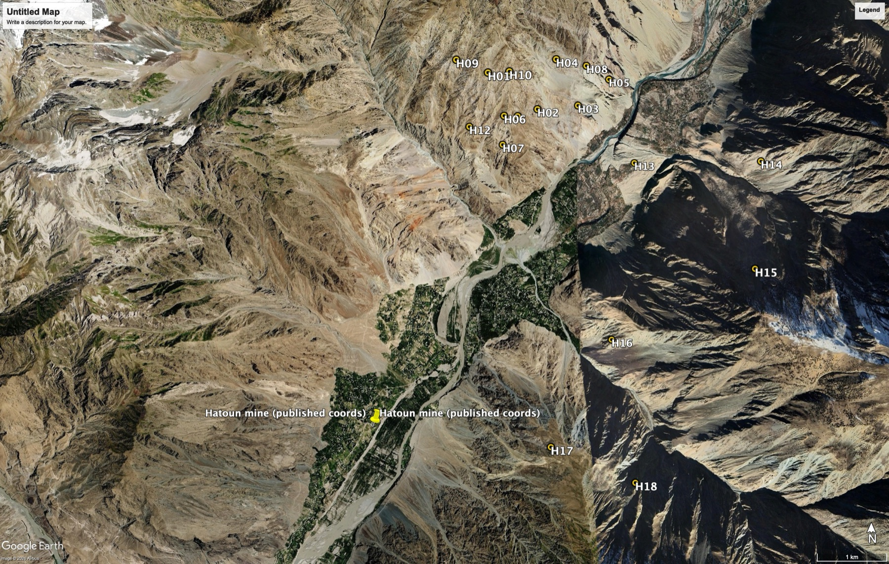
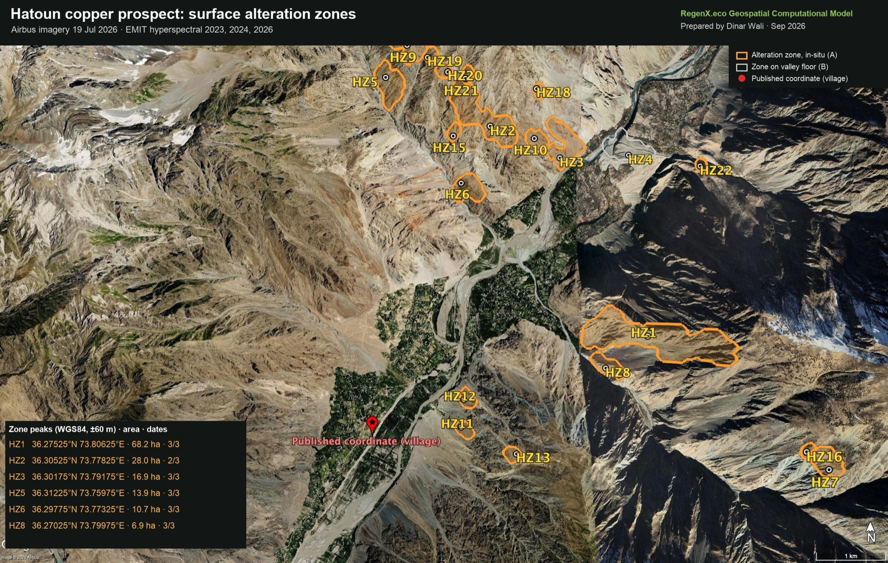
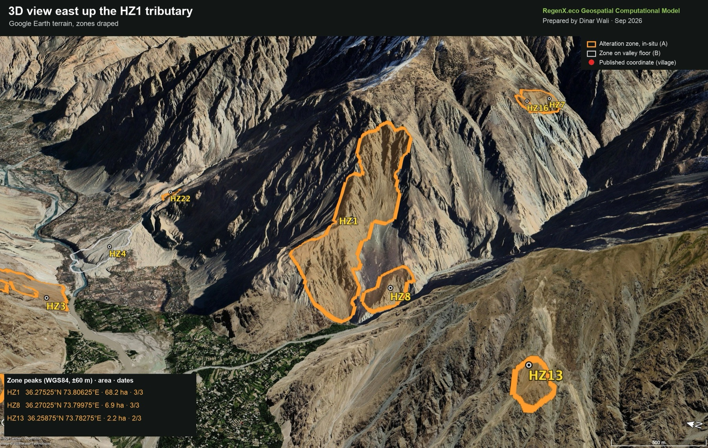
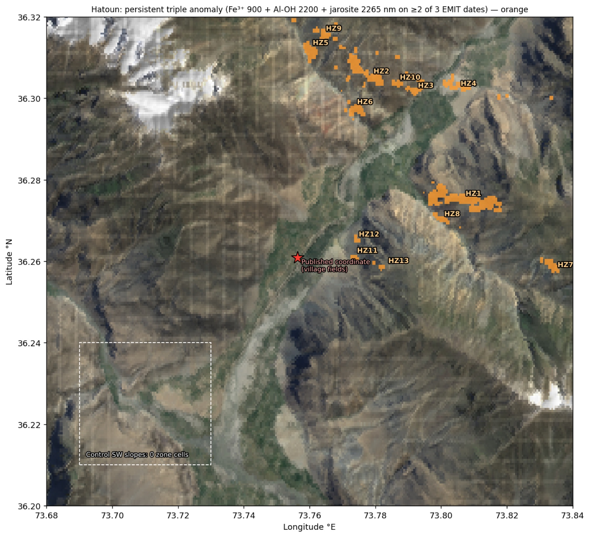
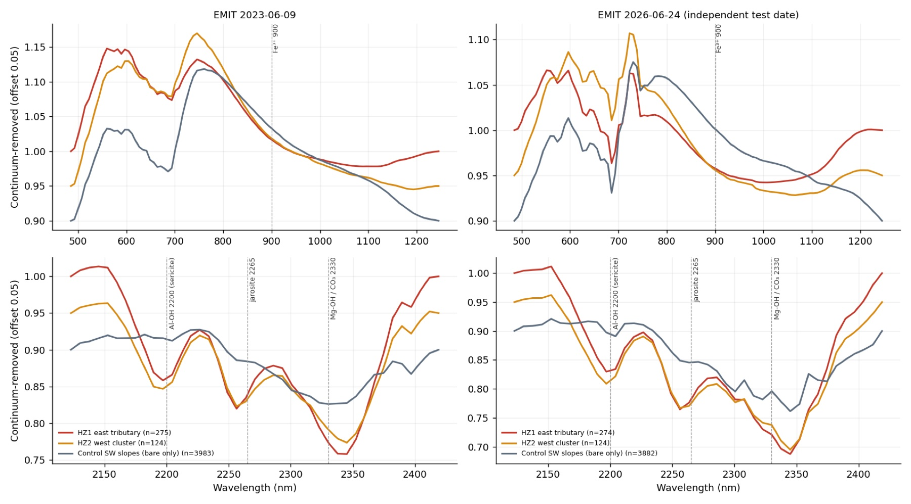
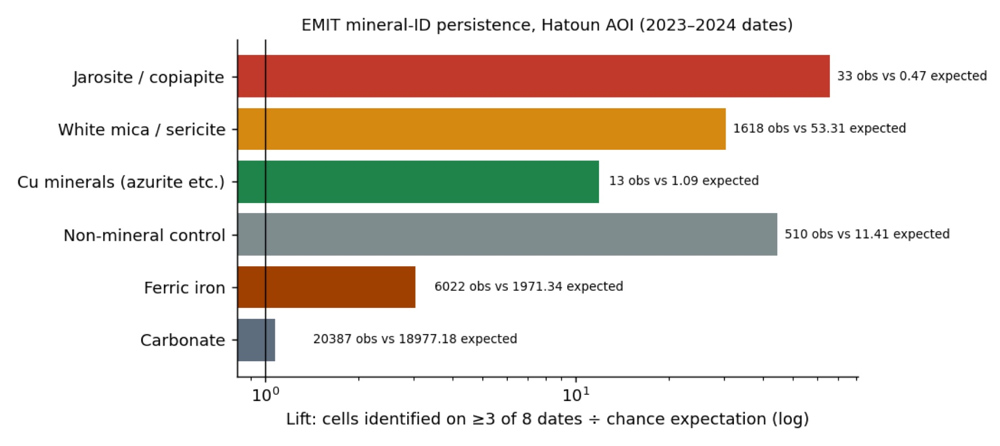
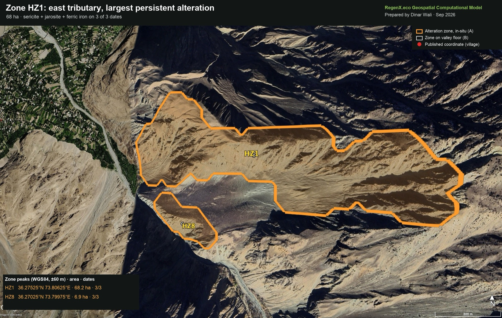
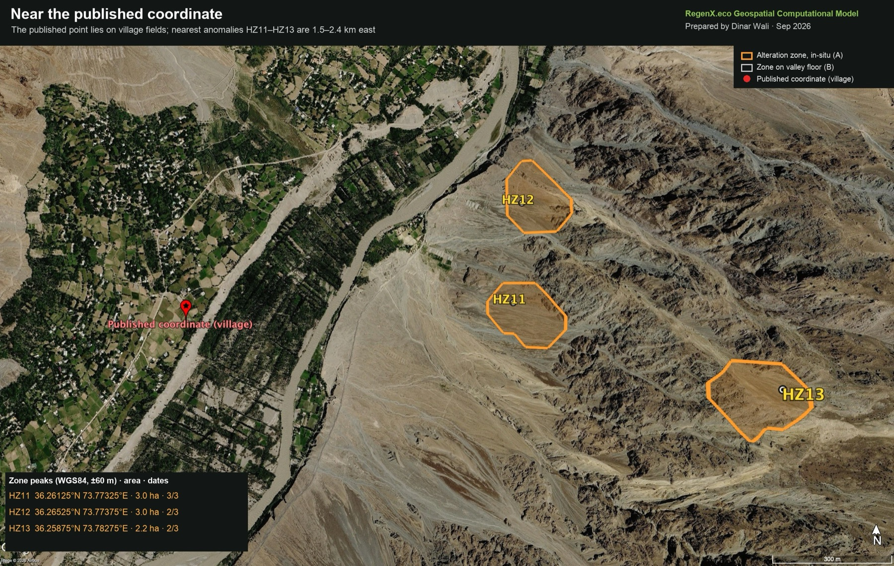

A satellite screening of the Hatoun copper occurrence near Gahkuch. It uses NASA EMIT hyperspectral data on four dates, Sentinel-2, the Copernicus DEM and Airbus imagery from Google Earth Pro, to locate the surface alteration a copper-sulphide system leaves behind.
High-resolution Airbus imagery from July and August 2026 covers the valley. The zones below were loaded into Google Earth Pro as a KML and rendered by Earth itself, so every outline follows the real terrain. Google Earth has no older high-resolution imagery here: the 2013 and 2018 layers are Landsat-grade. Drag the slider to compare the first-pass screening pins with the final zones.


First-pass pins (EMIT mineral IDs)Final zones
A zone is a group of EMIT cells where three absorptions are strong together on at least 2 of 3 reflectance dates: ferric iron at 900 nm, Al-OH (sericite) at 2200 nm and jarosite at 2265 nm. Class A zones sit on bedrock or scree. Class B zones sit on flat valley floor, so the material may have been transported. Coordinates are WGS84, accurate to about ±60 m.
| Peak lat °N | Peak lon °E |
|---|


| Median band depth (robust z) | Fe³⁺ 900 | Al-OH 2200 | Jarosite 2265 | Mg-OH 2330 |
|---|---|---|---|---|
| West-bank cluster · Jun 2023 | +1.73 | +1.08 | +2.01 | +0.23 |
| West-bank cluster · Jun 2024 | +1.23 | +0.96 | +1.64 | −0.11 |
| West-bank cluster · Jun 2026 (independent) | +1.28 | +1.00 | +1.86 | +0.08 |
| Control SW slopes · Jun 2026 | −0.15 | +0.38 | −0.56 | −0.85 |

| Test | Result |
|---|---|
| Control slopes | 0 of 4,800 south-west control cells meet the zone rule. The triple anomaly covers 0.02% of the control against 14.2% of the west-bank cluster (June 2026). The east-bank box, which holds the largest zone HZ1, scores 3.71% on the same date. In data/validation_2026.json the west-bank box is keyed "HZ1 cluster", an earlier zone name. |
| Independent date (24 Jun 2026) | The band depths in the west-bank cluster reproduce the 2023 and 2024 values within ±0.5 z. Every zone listed was also anomalous on at least 2 of the 3 dates. |
| EMIT mineral IDs, 2026 | Ferric-iron identifications are 3.4× more common in the cluster than in the control (14.1% vs 4.1%). The 2026 granule assigns no sulphate or mica there, so the library result is only a partial replication. |
| Sentinel-2, 20 m, 2021/2023/2025 | Strong iron-plus-clay pixels make up 0.8–1.5% of the cluster in every year, against 0.27% scene-wide and 0% in the control. East-bank slopes reach 1.5–2.0%, consistent with HZ1 and HZ13 lying there. |
| Coverage | EMIT retrieved minerals on about 100% of pixels on six of eight dates (bare, arid terrain). Snow covers 3–6% in June. |
Hatoun lies just south-west of the Main Karakoram Thrust, in the Kohistan island arc. Here the Ishkoman volcanics are intruded by diorite and granodiorite of the Kohistan batholith. The site assessment by ACM Mines and Minerals (Pvt) Ltd describes malachite and bornite hosted in diorite, adits, and steep terrain with limited access. A published water-quality study found elevated dissolved copper in the Ishkoman River segment, averaging 27.4 µg/L. Elsewhere in the arc, chalcopyrite is the main copper mineral, with subordinate bornite, chalcocite, malachite and azurite in quartz veins and altered volcanics.


| Priority | Action | Why |
|---|---|---|
| 1 | Obtain the adit coordinates from the ACM Mines report and overlay them on these zones | This confirms whether the known workings sit inside HZ1, HZ11–HZ13 or elsewhere, and calibrates the method against existing records. |
| 2 | Stream-sediment and heavy-mineral samples at the HZ1 tributary mouth and at west-bank gullies below HZ2–HZ6 | One sample per catchment tests the whole upslope zone for Cu, Mo, Au, Ag, As and Zn. |
| 3 | Field traverse of HZ1 and HZ2 with a handheld XRF and rock chips | Separates copper-bearing alteration from barren pyritic alteration. Send samples for four-acid ICP-MS and fire assay. |
| 4 | EnMAP or PRISMA tasking (30 m), or WorldView-3 SWIR (3.7 m) | Resolves the smaller zones and would detect copper oxides at outcrop scale. |
Data. NASA EMIT L2B mineral identification on 8 dates (Apr 2023 – Aug 2024) plus 24 Jun 2026. EMIT L2A reflectance on 9 Jun 2023, 26 Jun 2024 and 24 Jun 2026, orthorectified by GLT gather. Sentinel-2 L2A: 14 cloud-free Jul–Oct scenes, tile 43SCA, 2021–2025. Copernicus GLO-30 DEM. Google Earth Pro with Airbus imagery of 19 Jul and 16 Aug 2026.
Rules carried over from Bayan Obo. A zone needs repetition across dates, a clean control area, an independent test date, and ground inspection in high-resolution imagery. Scores are scene-relative, so atmospheric residuals cancel.
Limits. The 60 m EMIT pixels mix rock, scree and shadow. Veins and adits are far smaller than a pixel. Copper minerals themselves (malachite, azurite, chrysocolla) are not robustly detected. North-facing slopes are partly shadowed and 3–6% of the area is snow in June. Nothing here is an assay.